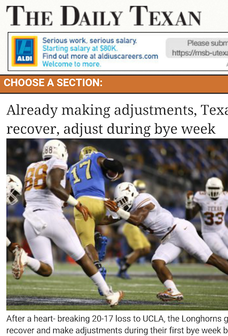
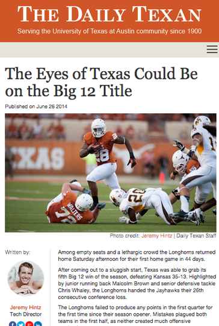

What is The Daily Texan?
The Daily Texan is the for-students, by-students newspaper on campus at The University of Texas with a daily circulation of over 30,000 a day.
My Role
I have spent the past two semesters as Digital Projects Director at the Texan. I am responsible for maintaining the paper's current Drupal website, located at www.dailytexanonline.com while also heading up new digital ventures. The venture I am currently undertaking is a complete overhaul of the site.
Our redesigned sites moves away from Drupal in favor of a brand new CMS called Webhook, which runs on Node.js, Firebase, Grunt and Ember. I am head web developer and also manage a team of 4 other developers.
We're not quite done with the redesign, but we will have it shipped by the end of the semester. Looking at our web traffic, we elected to implement the article and author pages first. You can find examples of an article here and an author page here.
Before and After:
Desktop - Before
Desktop - After
| Mobile - Before | Mobile - After |
|  |  |